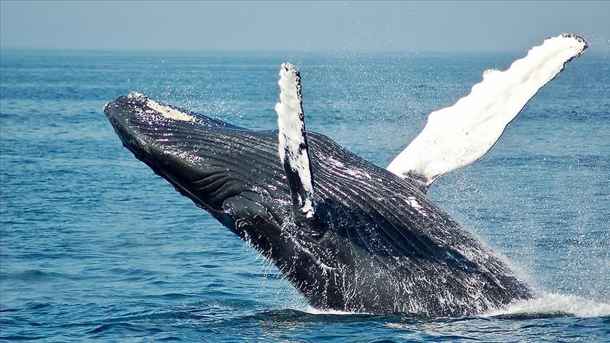

Backed Whale

Description
It's an important day: Thousands of guests will arrive for a magnificent feast but you have no clue about
what to cook. No more worries my dearest reader.
With Odin Recipes, the day is saved. For the first time in history, we will show you how to bake a whole blue whale
to satisfy the hunger of the hungriest guest with this amazing recipe.
Ingredients
Ingredients for 6437 portions.
- 1 Blue whale from the northern Atlantic
- 2300kg Potatoes
- 220kg Walnuts
- 220kg Almonds
- 220kg Sweet apples
- 220kg Carrots
- 150kg Raisins
- 180kg Butter
- 250kg Salt
- 280kg Pepper
- 150kg Rosmarin
- 100kg Thyme
Steps
- Add Walnuts,Almonds,Sweet apples,Carrots,Raisins,Butter,Pepper and Salt in two concrete
mixer trucks and mix everything until we obtain an uniform paste.
- Cut open the Whale and eviscerate it. Once it's done, rinse the carcass with clean water and repeat the process
until only clean water is coming out. It's strongly recommended to wear a raincoat,gloves and rubber boots during the process.
- Preheat up to 120°C an industrial oven. The nearest steal mill should have one with enough capacity.
- Fill the Whale with the mix contained in both cement mixers and close it.
- Load the Whale with an up to 7 tonnes crane on a flat bed trailer and transport to
the oven.
- The process of baking will take about 16 to 18 hours. In the meantime, peel off the potatoes and cut them
into smaller pieces. Mix them with Olive oil, thyme,rosmarin and salt and put them in the oven the last
2 and a half hours.
- Once the potatoes are soft, it's time to serve. Sea chanties are reccomended to be sang to make this
an unforgetable dinner.
Back to mainsite